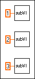
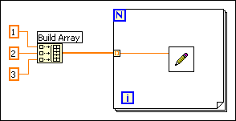

As you design programs, you might find that certain operations are performed frequently. Depending on the situation, using subVIs or loops to repeat an action can simplify a VI.
For example, consider the following block diagram, where three similar operations run independently.

An alternative to this design is a loop that performs the operation three times, as shown in the following block diagram. You can build an array of the different arguments and use auto-indexing to set the correct value for each iteration of the For Loop.

If the array elements are constant, you can use an array constant instead of building the array on the block diagram.
Some users mistakenly avoid using subVIs because they are afraid of the overhead it can add to the execution time. It is true that you probably do not want to create a subVI from a simple mathematical operation such as the Add function, especially if it must be repeated thousands of times. However, the overhead for a subVI is fairly small and usually minimized by any I/O you perform or by any memory management that occurs from complex manipulation of arrays.
Refer to the LabVIEW Style Checklist for more tips on how to maintain consistent style and efficiency throughout your programs.